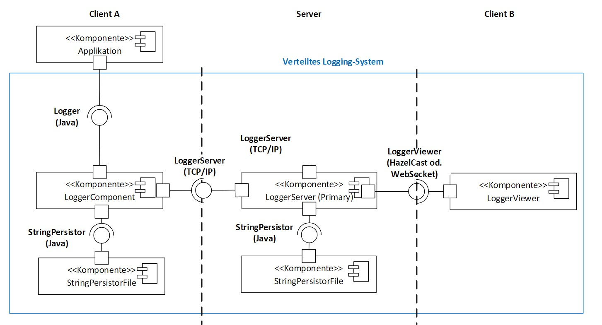

Java • TCP/IP • Distributed Systems • Docker
This project was done in the context of the module VSK (distributed systems) at HSLU. The project is a distributed logging system which enables logging via TCP from multiple clients to a central server. It also includes a logger viewer which allows for a visual representation of the logged data at the server.
The system consists of several key components that work together to provide reliable distributed logging capabilities. Each component is designed to be independently deployable and scalable.

System Component Diagram
The project utilizes modern Java technologies and follows distributed systems best practices. Docker containers ensure consistent deployment across different environments, while TCP/IP provides reliable network communication.